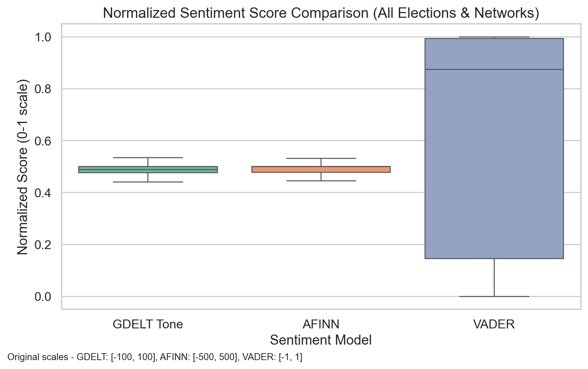
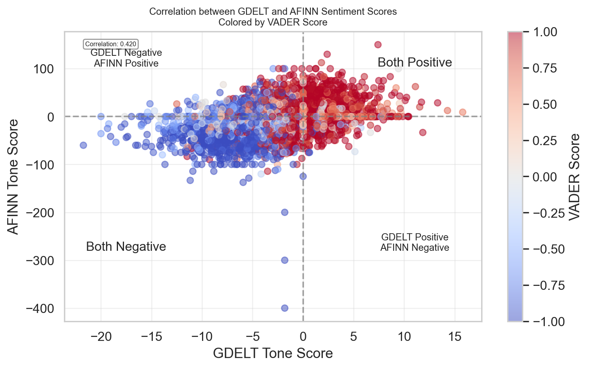

import pandas as pdimport globimport matplotlib.pyplot as pltimport numpy as npimport seaborn as snsfrom collections import Counterfrom scipy.stats import ttest_indimport matplotlib.dates as mdatesfrom matplotlib.ticker import MaxNLocator# Set visualization styleplt.style.use('seaborn-v0_8-whitegrid')plt.rcParams['font.family'] ='sans-serif'plt.rcParams['font.sans-serif'] = ['Arial', 'DejaVu Sans', 'Liberation Sans']# Define network colorsNETWORK_COLORS = {'Fox News': '#E41A1C', # Red for Fox'MSNBC': '#377EB8', # Blue for MSNBC'ABC News': '#984EA3'# Purple for ABC}# Import data filescsv_files = ( glob.glob("../data/fox/fox*.csv") + glob.glob("../data/abc/abc*.csv") + glob.glob("../data/msnbc/msnbc*.csv"))df = pd.concat([pd.read_csv(file) forfilein csv_files], ignore_index=True)# Select relevant columnscolumns_of_interest = ["parsed_date", "url", "headline_from_url","V2Themes", "V2Locations", "V2Persons","V2Organizations", "V2Tone","afinn_tone_score", "vader_tone_score", "sentiment_label"]df = df[columns_of_interest]# Convert date and extract network informationdf["parsed_date"] = pd.to_datetime(df["parsed_date"], errors="coerce").dt.tz_localize(None)# Extract network source from URLsdef extract_network(url):if'fox'in url.lower():return'Fox News'elif'abc'in url.lower():return'ABC News'elif'msnbc'in url.lower():return'MSNBC'else:return'Unknown'# Add network columndf['network'] = df['url'].apply(extract_network)# Extract tone componentstone_split = df["V2Tone"].str.split(",", expand=True)df["tone"] = pd.to_numeric(tone_split[0], errors="coerce")df["positive_score"] = pd.to_numeric(tone_split[1], errors="coerce")df["negative_score"] = pd.to_numeric(tone_split[2], errors="coerce")# Create month and year columns for aggregationdf['month'] = df['parsed_date'].dt.to_period('M')df['year'] = df['parsed_date'].dt.yeardf['month_year'] = df['parsed_date'].dt.strftime('%Y-%m')
Code
from datetime import timedeltaelections = {"2016": pd.to_datetime("2016-11-08"),"2020": pd.to_datetime("2020-11-03"),"2024": pd.to_datetime("2024-11-05")}# Add flag for period around each electionelection_windows = []for year, date in elections.items(): df_sub = df[ (df["parsed_date"] >= date - timedelta(days=30)) & (df["parsed_date"] <= date + timedelta(days=30)) ].copy() df_sub["election_year"] = year df_sub["period"] = np.where( df_sub["parsed_date"] < date, "Before", "After" ) election_windows.append(df_sub)df_elections = pd.concat(election_windows)
# Reshape the data for plottingdf_long = df_elections.melt( id_vars=["parsed_date", "network", "election_year", "period"], value_vars=["tone", "afinn_tone_score", "vader_tone_score"], var_name="model", value_name="score")
Code
import pandas as pdimport globimport matplotlib.pyplot as pltimport numpy as npimport seaborn as snsfrom collections import Counterfrom scipy.stats import ttest_indimport matplotlib.dates as mdatesfrom matplotlib.ticker import MaxNLocatorfrom datetime import timedelta# Set visualization styleplt.style.use('seaborn-v0_8-whitegrid')plt.rcParams['font.family'] ='sans-serif'plt.rcParams['font.sans-serif'] = ['Arial', 'DejaVu Sans', 'Liberation Sans']# Define network colorsNETWORK_COLORS = {'Fox News': '#E41A1C', # Red for Fox'MSNBC': '#377EB8', # Blue for MSNBC'ABC News': '#984EA3'# Purple for ABC}# Import data filescsv_files = ( glob.glob("../data/fox/fox*.csv") + glob.glob("../data/abc/abc*.csv") + glob.glob("../data/msnbc/msnbc*.csv"))df = pd.concat([pd.read_csv(file) forfilein csv_files], ignore_index=True)# Select relevant columnscolumns_of_interest = ["parsed_date", "url", "headline_from_url","V2Themes", "V2Locations", "V2Persons","V2Organizations", "V2Tone","afinn_tone_score", "vader_tone_score", "sentiment_label"]df = df[columns_of_interest]# Convert date and extract network informationdf["parsed_date"] = pd.to_datetime(df["parsed_date"], errors="coerce").dt.tz_localize(None)# Extract network source from URLsdef extract_network(url):if'fox'in url.lower():return'Fox News'elif'abc'in url.lower():return'ABC News'elif'msnbc'in url.lower():return'MSNBC'else:return'Unknown'# Add network columndf['network'] = df['url'].apply(extract_network)# Extract tone componentstone_split = df["V2Tone"].str.split(",", expand=True)df["tone"] = pd.to_numeric(tone_split[0], errors="coerce")df["positive_score"] = pd.to_numeric(tone_split[1], errors="coerce")df["negative_score"] = pd.to_numeric(tone_split[2], errors="coerce")# Create month and year columns for aggregationdf['month'] = df['parsed_date'].dt.to_period('M')df['year'] = df['parsed_date'].dt.yeardf['month_year'] = df['parsed_date'].dt.strftime('%Y-%m')elections = {"2016": pd.to_datetime("2016-11-08"),"2020": pd.to_datetime("2020-11-03"),"2024": pd.to_datetime("2024-11-05")}# Add flag for period around each electionelection_windows = []for year, date in elections.items(): df_sub = df[ (df["parsed_date"] >= date - timedelta(days=30)) & (df["parsed_date"] <= date + timedelta(days=30)) ].copy() df_sub["election_year"] = year df_sub["period"] = np.where( df_sub["parsed_date"] < date, "Before", "After" ) election_windows.append(df_sub)df_elections = pd.concat(election_windows)df_elections = df_elections[["parsed_date", "network", "election_year", "period","tone", "afinn_tone_score", "vader_tone_score"]]# Function to normalize values based on theoretical rangesdef normalize_score_theoretical(series, min_val, max_val):return (series - min_val) / (max_val - min_val)# Standard theoretical ranges for each sentiment measure# GDELT Tone: typically ranges from -100 to +100# AFINN: ranges from -5 to +5 per word, but articles can have wide ranges like -500 to +500# VADER: ranges from -1 to +1# Create normalized versions using theoretical rangesdf_elections['tone_normalized'] = normalize_score_theoretical(df_elections['tone'], -100, 100)df_elections['afinn_normalized'] = normalize_score_theoretical(df_elections['afinn_tone_score'], -500, 500)df_elections['vader_normalized'] = normalize_score_theoretical(df_elections['vader_tone_score'], -1, 1)# Clip values to ensure they fall within 0-1 range (in case of outliers beyond theoretical ranges)df_elections['tone_normalized'] = df_elections['tone_normalized'].clip(0, 1)df_elections['afinn_normalized'] = df_elections['afinn_normalized'].clip(0, 1)df_elections['vader_normalized'] = df_elections['vader_normalized'].clip(0, 1)# Reshape the data for plotting with normalized scoresdf_long_normalized = df_elections.melt( id_vars=["parsed_date", "network", "election_year", "period"], value_vars=["tone_normalized", "afinn_normalized", "vader_normalized"], var_name="model", value_name="score")# Update the model names for better readabilitydf_long_normalized['model'] = df_long_normalized['model'].replace({'tone_normalized': 'GDELT Tone','afinn_normalized': 'AFINN', 'vader_normalized': 'VADER'})# Set the visual stylesns.set(style="whitegrid", font_scale=1.1)# Create the boxplot with normalized scoresplt.figure(figsize=(8, 5))ax = sns.boxplot( x="model", y="score", data=df_long_normalized, palette="Set2", showfliers=False)# Add original scale information as text annotationplt.figtext(0.01, 0.01, "Original scales - GDELT: [-100, 100], AFINN: [-500, 500], VADER: [-1, 1]", fontsize=9)plt.title("Normalized Sentiment Score Comparison (All Elections & Networks)", fontsize=14)plt.xlabel("Sentiment Model")plt.ylabel("Normalized Score (0-1 scale)")plt.tight_layout()plt.show()

The fact that VADER’s distribution is skewed higher than the other two metrics suggests it might be detecting more positive sentiment in the same news content, or it could be that VADER’s algorithm is more sensitive to certain types of positive language used in news reporting.
It’s also worth noting that GDELT and AFINN seem to have similar distributions despite using different scales and methodologies, which suggests they might be capturing similar sentiment patterns in the news articles.
Code
# Add this after your existing code# Create a new figure for the scatter plotplt.figure(figsize=(8, 5))# Calculate correlation coefficientcorrelation = df_elections['tone'].corr(df_elections['afinn_tone_score'])# Create a scatter plot of GDELT vs AFINN (using original scores, not normalized)scatter = plt.scatter( df_elections['tone'], df_elections['afinn_tone_score'], alpha=0.5, c=df_elections['vader_tone_score'], # Color points by VADER score for comparison cmap='coolwarm'# Red for negative VADER, blue for positive)# Add a color bar to show VADER scorescbar = plt.colorbar(scatter)cbar.set_label('VADER Score')# Add correlation informationplt.annotate(f'Correlation: {correlation:.3f}', xy=(0.05, 0.95), xycoords='axes fraction', fontsize=6, bbox=dict(boxstyle="round,pad=0.3", fc="white", ec="gray", alpha=0.8))# Add a horizontal and vertical line at 0 to indicate neutral sentimentplt.axhline(y=0, color='gray', linestyle='--', alpha=0.7)plt.axvline(x=0, color='gray', linestyle='--', alpha=0.7)# Label the quadrantsplt.text(df_elections['tone'].max()*0.7, df_elections['afinn_tone_score'].max()*0.7, 'Both Positive', fontsize=12, ha='center')plt.text(df_elections['tone'].min()*0.7, df_elections['afinn_tone_score'].max()*0.7, 'GDELT Negative\nAFINN Positive', fontsize=9, ha='center')plt.text(df_elections['tone'].max()*0.7, df_elections['afinn_tone_score'].min()*0.7, 'GDELT Positive\nAFINN Negative', fontsize=9, ha='center')plt.text(df_elections['tone'].min()*0.7, df_elections['afinn_tone_score'].min()*0.7, 'Both Negative', fontsize=12, ha='center')# Add labels and titleplt.xlabel('GDELT Tone Score')plt.ylabel('AFINN Tone Score')plt.title('Correlation between GDELT and AFINN Sentiment Scores\nColored by VADER Score', fontsize=9)# Add a grid for better readabilityplt.grid(True, alpha=0.3)# Tight layoutplt.tight_layout()# Show the plotplt.show()

A significant cluster of points falls in the “Both Negative” quadrant, confirming your observation that both GDELT and AFINN detect substantial negative sentiment in the news articles.
There are very few points in the “GDELT Positive, AFINN Negative” quadrant, suggesting that when GDELT finds positive sentiment, AFINN rarely strongly disagrees.
However, there are a fair number of points in the “GDELT Negative, AFINN Positive” quadrant, indicating some systematic differences in how these two metrics evaluate certain types of content.